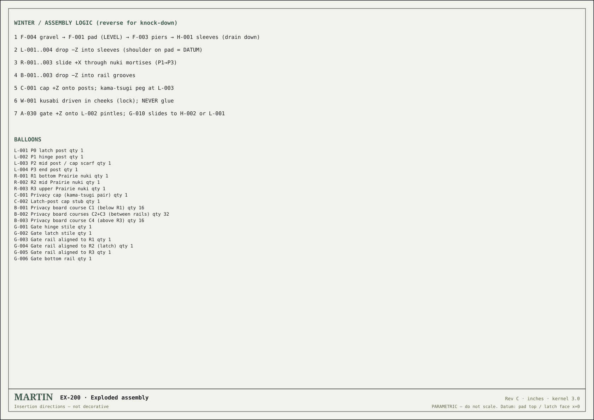

Live worked package / Rev F
MARTIN Tree of Life screen
The repository’s existing MARTIN package demonstrates the workflow in practice: a parametric source model, STEP export, exploded assembly, BOM, cut lists, joint sheets, build manual, and QA register.

EX-200 / Exploded assembly Open sheet ↗